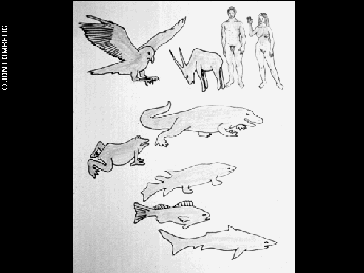

I guess my problem is that the Golden Record seems so presumptive. Like it's existence in and of itself is presumptive.
So the Golden Records (plural, because there are two identical records) were attached to the Voyager spacecraft in 1977. And behind them, there was a team of curators, which is so interesting to me because that's the violence of the archive right? The super insidious cutting and pruning and deciding what can be kept and how it can be kept.
Obviously, there is limited space on a record. You have to choose what to bring with you as a potential message to a future being – and yeah, obviously I don’t have an issue with that concept.
But the project is presumptive. NASA sought to communicate to sentient beings – in an inconceivably distant future – what humanity was. And they chose – this?

For the record – my body doesn’t look like either of these pictures. I also find this pretty funny because these silhouettes have pretty 70s haircuts. Like, the "female" has a perm.
There are 55 languages on the Golden Record. Why those languages? Why not others? And they got them to say phrases like "Hello", and "How are you?" and "Welcome".
You know what I'd like to say to you?
Where are you? Why didn't you come sooner?

I had a previous attempt at a Golden Record.
I tried to represent everyone. It was too big. I started by writing eight pages on the significance of waterways in human and ecological history and then gave up.